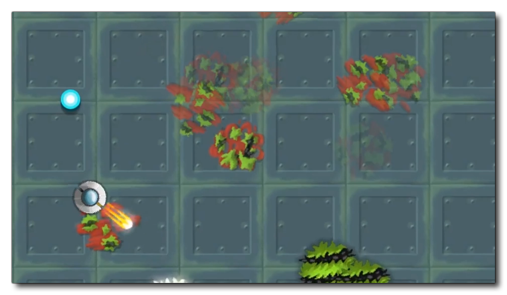
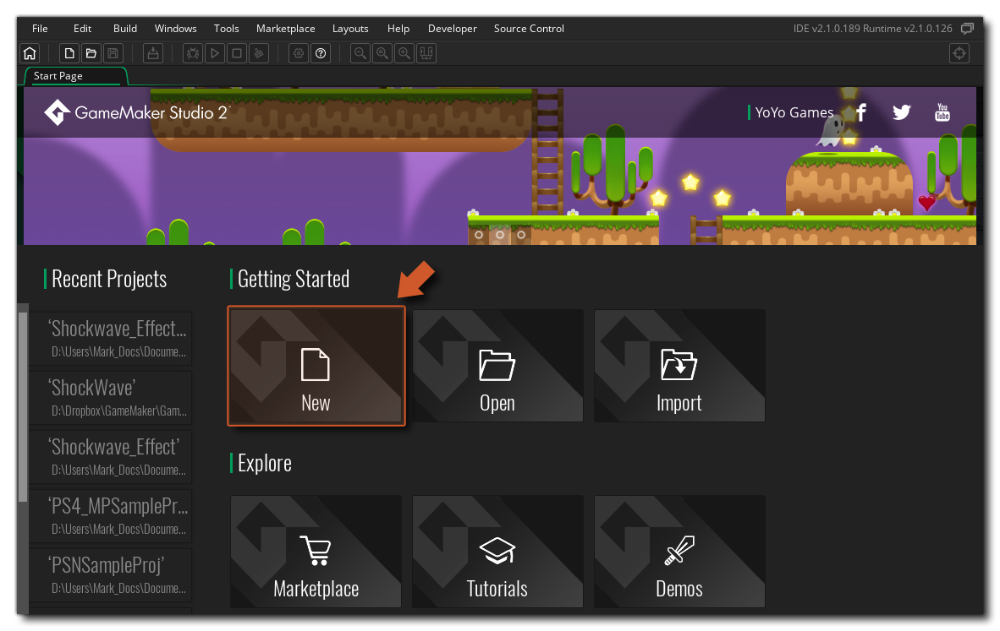

This is Chapter 1 of the My First Game - DnD™ tutorial designed to get you started making your first game with GameMaker Studio 2. Throughout this tutorial we will build a small "arena shooter" - a top down action game with a player, some enemies and lots of bullets. The final game will look something like this: 
We will be keeping the tutorial as simple as possible, with the idea being to give enough of an overview of how things work for you to get stuck in and making your own games as quick as possible. When you opened this tutorial a new Drag and Drop™ project was made for you automatically and you should continue using this project to create the tutorial game. However, we'll quickly give an overview of how you create a new project from scratch for the future to start with.
First you would open GameMaker Studio 2 , and then click on the New Project button shown on the main Start Page: 
You will then be presented with two options:
Drag and Drop™ is the powerful visual scripting language that permits you to code a project using chained action blocks, while the GameMaker Language (GML) is the propriety scripting language that permits you to create games using the code editor. For this tutorial we are going to use DRag & Drop so you would click that button and then choose a project name to go with the game you want to make.
Once you have created and saved this initial blank project you will be presented with the GameMaker Studio 2 workspace...